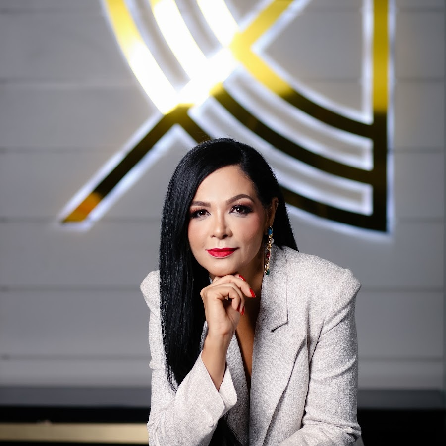
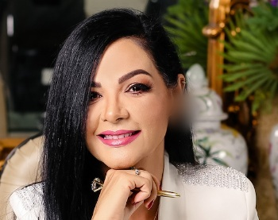

Dermatologista em Paulo Afonso · Bahia
Dra. Isnaia
Almeida
Pele e cabelos.
Um cuidado que começa pela avaliação.
CRM-BA 18993 · RQE 16275

Por onde começar
O que você gostaria
de cuidar hoje?
Encontre informações para chegar à consulta com suas dúvidas. A escolha do cuidado depende da avaliação individual.
Pele e unhas
Acne, manchas, dermatites e outras queixas merecem avaliação.
Dermatologia clínica ↗02Cabelo e couro cabeludo
Entender a causa da queda é parte da escolha do cuidado.
Atuação em tricologia ↗03Transplante capilar
Conheça os pontos que precisam ser conversados na avaliação.
Entender a indicação ↗04Cuidado facial
Informações sobre harmonização e uma decisão individual.
Harmonização facial ↗Áreas e serviços declarados pela médica. Perfil profissional ↗
Cabelo e couro cabeludo
A pergunta vem
antes da escolha.
Queda de cabelo não é uma queixa única. Na atuação em tricologia, a conversa sobre o início da queda, o couro cabeludo e os cuidados já tentados ajuda a orientar a avaliação.
A médica publica conteúdos sobre alopecia e chama atenção para a indicação de suplementos — não para o uso por conta própria.
Conhecer o cuidado capilar →
A médica
Dermatologia
e ensino em
Paulo Afonso.
A Dra. Isnaia Almeida é dermatologista, CRM-BA 18993, RQE 16275, e membro titular da Sociedade Brasileira de Dermatologia.
Seu nome também integra o quadro de docentes de Semiologia do curso de Medicina da UNIVASF, campus Paulo Afonso.
Conheça sua atuação →Na voz da médica
Há indicação?
“Mais não significa melhor. Suplementar sem deficiência não é sinônimo de tratar queda — e o excesso de selênio pode, inclusive, causar alopecia. Antes de suplementar, precisamos saber: há indicação?”
Dra. Isnaia Almeida · publicação sobre selênio e cabelo
Canal da clínica · texto de 20/09/2026 ↗
Trecho informativo. A indicação de suplementação depende da consulta; não inicie ou altere o uso por conta própria.

Clínica Dermatológica Isnaia Almeida
Um endereço
para o seu cuidado.
Nota e total do perfil da clínica no Google, registrados no levantamento de 22/10/2026. A avaliação é do estabelecimento e não representa 365 avaliações individuais da médica.
Ver o perfil da clínica ↗Conteúdos e ensino
Informação também
faz parte da conversa.
Semiologia
na UNIVASF
Nome listado no quadro docente de Medicina do campus Paulo Afonso.
Consultar página da universidade ↗02 / VÍDEO AUTORALDermatite seborreica! Vc sabe diagnosticar e tratar?
Título publicado no canal Tricoacademy.
Abrir vídeo no YouTube ↗03 / VÍDEO AUTORALAchados dermatoscopicos na alopecia areata!
Conteúdo do canal da médica, sem imagens clínicas nesta prévia.
Abrir vídeo no YouTube ↗Conteúdos gerais não substituem avaliação. Os títulos são reproduzidos como publicados, sem recomendação de tratamento.

Consultório
No Centro de
Paulo Afonso.
Av. Apolônio Sales, 848Centro · Paulo Afonso – BA
CEP 48601-208
Clínica Dermatológica Isnaia Almeida. Confirme a disponibilidade e as orientações para sua visita com a recepção.
Recepção · (75) 99132-4511
Endereço na SBD ↗Dúvidas frequentes
Antes de falar com a equipe
A Dra. Isnaia atende quais áreas?
Dermatologia clínica, atuação em tricologia, transplante capilar, harmonização facial e serviços de laser constam no perfil profissional. A indicação de qualquer procedimento é individual, definida em consulta.
Como confirmar uma consulta?
Fale com a recepção pelo WhatsApp (75) 99132-4511. A equipe confirma disponibilidade e orientações; esta prévia não faz reservas.
Preciso escolher um procedimento antes de consultar?
Não. Você pode levar sua queixa e suas dúvidas. A avaliação ajuda a discutir possibilidades, limites e cuidados para o seu caso.
Como confirmar horários e condições de atendimento?
Consulte a equipe. Horários semanais, valores e convênios não foram confirmados para esta demonstração e não são apresentados como informações atuais.
Seu próximo passo
Uma conversa começa com as suas dúvidas.
Entre em contato com a recepção para confirmar a disponibilidade de consulta em Paulo Afonso.